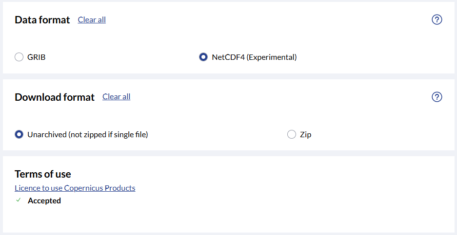
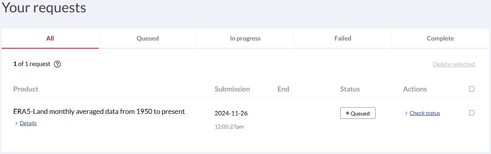

Download your first dataset
ERA5-Land is a high-resolution reanalysis dataset that provides a consistent and detailed view of land variables over several decades, combining model data with atmospheric forcings from ERA5 to ensure accuracy. By correcting input variables for elevation differences and leveraging indirect observational forcings, it provides improved precision for land surface applications such as flood and drought forecasting. Despite some inherent uncertainties, ERA5-Land is a valuable resource for decision-making and environmental analysis due to its comprehensive temporal and spatial resolution.
Dataset: Climate indicator Europe from 1940 to 2100
• Data source: Climate Indicator Europe
• Documentation
Specifying the paths and working directories
Specifying paths and working directories in Jupyter Notebook is essential for ensuring the notebook correctly accesses and saves files, enabling seamless data loading, script execution, and result storage. It eliminates confusion over file locations, reducing errors and making the code more portable and reproducible across different systems.
import os
''' ---- Hier die Verzeichnisse angeben ---- '''
download_folder = r".\data\era5-land-monthly\download"
working_folder = r".\data\era5-land-monthly\working"
output_folder = r".\data\era5-land-monthly\output"
''' ----- Ende der Eingaben ---- '''
if not os.path.exists(working_folder):
os.makedirs(working_folder)
if not os.path.exists(output_folder):
os.makedirs(output_folder)
if not os.path.exists(download_folder):
os.makedirs(download_folder)
Filter and download dataset
This section outlines a process for downloading a test dataset from ERA5-Land Monthly Averaged Data. We’ll retrieve variables from the “Temperature” and “Wind, Pressure, and Precipitation” groups using the CDS API. The process involves two steps:
Authentication: Replace api_key with your Personal Access Token from the CDS website.
API Request Definition: Specify the dataset and variables on the CDS download page and include them in your API request.
Execute API request and download: Download the dataset based on the provided fields (parameters) for filtering the dataset.
1. Authentication
import cdsapi
def main():
api_key = "fdae60fd-35d4-436f-825c-c63fedab94a4"
api_url = "https://cds.climate.copernicus.eu/api"
client = cdsapi.Client(url=api_url, key=api_key)
if __name__ == "__main__":
main()
Recovering from HTTP error [500 Internal Server Error], attemps 1 of 500
Retrying in 120 seconds
2. API Request Definition
Open this link in your browser: ERA-5 Land Monthly
Make sure that you are logged with your CDS account
Select request fields:
Product type: “Monthly averaged reanalysis”
Variable: “2m temperature”
Year: Click on “Select all”
Month: Click on “Select all
Time: “00:00”
Geographical area: Select “Sub-region extraction” and update the values as:
Direction
Value
North
47.8
West
9.0
East
9.3
South
47.6
Data format: “NetCDF4 (Experimental)”
Download format: “Unarchieved (not zipped if single file)”
Then accept the Terms of use.
If you have done everything correctly in Step 2, the API request should look something like this.
For the next step, you will only need the dataset and request from the API request code. Copy and past it in the next cell.
Important: Larget dataset means longer Queue time and longer processing duration. So, it is recommended to apply filters appropriately.
3. Execute API request and download
Replace the dataset and request from API request to the cell below.
dataset = "reanalysis-era5-land-monthly-means"
request = {
"product_type": ["monthly_averaged_reanalysis"],
"variable": ["2m_temperature"],
"year": [
"2020", "2021",
"2022", "2023", "2024"
],
"month": [
"01", "02", "03",
"04", "05", "06",
"07", "08", "09",
"10", "11", "12"
],
"time": ["00:00"],
"data_format": "netcdf",
"download_format": "unarchived",
"area": [47.8, 9, 47.6, 9.3]
}
# This request downloads year 1950 to 2024 data, monthly averaged at 00:00
def main():
# This request downloads year 1950 to 2024 data, monthly averaged at 00:00
dataset_filename = f"{dataset}_test_data.nc"
dataset_filepath = os.path.join(download_folder, dataset_filename)
# Download the dataset with the defined request parameters
client.retrieve(dataset, request, dataset_filepath)
if __name__ == "__main__":
main()
On the code is running, you can check the status of API requests from Your requests at CDS request
